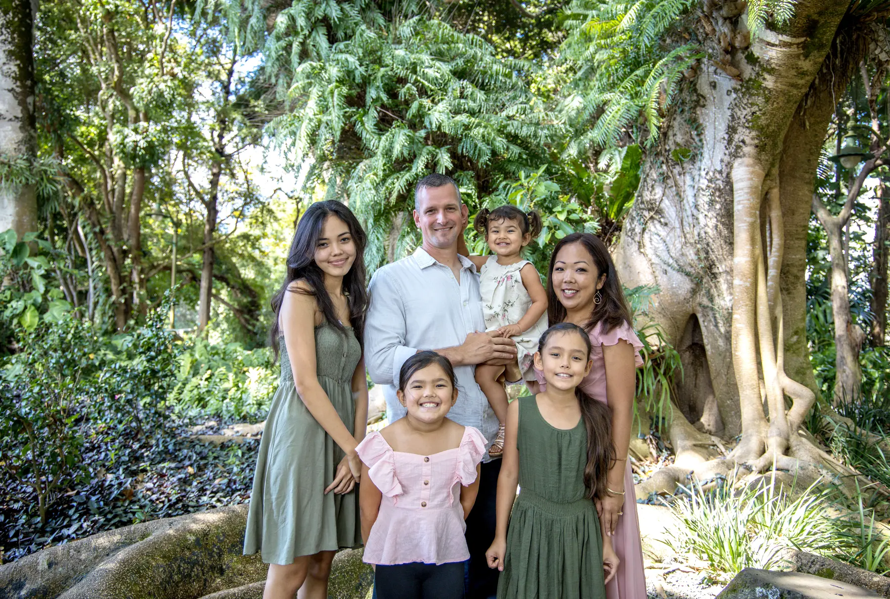
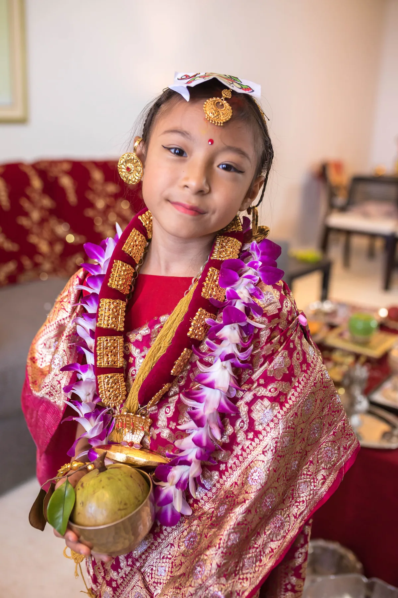

We start with your vision.
Tell Jaja who will be there, what you are celebrating and the Oʻahu setting you have in mind.
Family photographer · Serving Oʻahu
Warm, natural photographs for the beautiful chaos, quiet connection and big milestones that make a life together.


Aloha, I’m Jaja
The real laugh. The hand your keiki reaches for. The way your whole family fits together right now.
I found photography in high school and returned to it in 2014. Since then, I’ve learned through experience, creative friends and the people who trust me with their memories. My sessions are warm, patient and people-first. I’ll offer direction when you need it, then leave room for the connection to happen naturally.
Come as you are. I’ll help with the rest.
More about JajaChoose your story
Start with the photographs you are drawn to. Each collection below opens directly to that part of Jaja’s portfolio.

Family · Maternity · Keiki

Couples · Engagements · Weddings

Portraits · Seniors

Events · Intimate Weddings
The Lady Jaja experience
Every inquiry is personal. Jaja shapes the coverage around your people, your occasion and the photographs you want to carry forward.
Tell Jaja who will be there, what you are celebrating and the Oʻahu setting you have in mind.
Portrait and engagement sessions are typically planned for one location, with enough time for a relaxed mix of guided and natural moments.
Your collection includes professionally edited digital photographs delivered as high-resolution downloads. Exact coverage and image quantities are confirmed before booking.
Selected frames
Good to know
Portrait sessions include your photography time, professional editing and a collection of high-resolution digital downloads. Sessions are generally planned around one location. Exact timing and image quantities depend on the session and are confirmed before booking.
Pricing is shared privately after you submit an inquiry. Tell Jaja what you are planning, your preferred timeframe and how many people will participate so she can send the most relevant options.
Yes. Jaja photographs engagements, ceremony-only celebrations and intimate weddings with up to 50 guests. Include your date, estimated guest count and the kind of coverage you need in your inquiry.
Start by sharing both locations with Jaja. Additional locations may require more coverage time or travel and will be addressed in your personalized options.
Sessions take place on Oʻahu. Share the setting you have in mind when you inquire, and Jaja will confirm whether it works for your session.
No. The form begins the conversation. Your date is not confirmed until Jaja responds and the booking steps are completed.

Your people · Your season · Your story